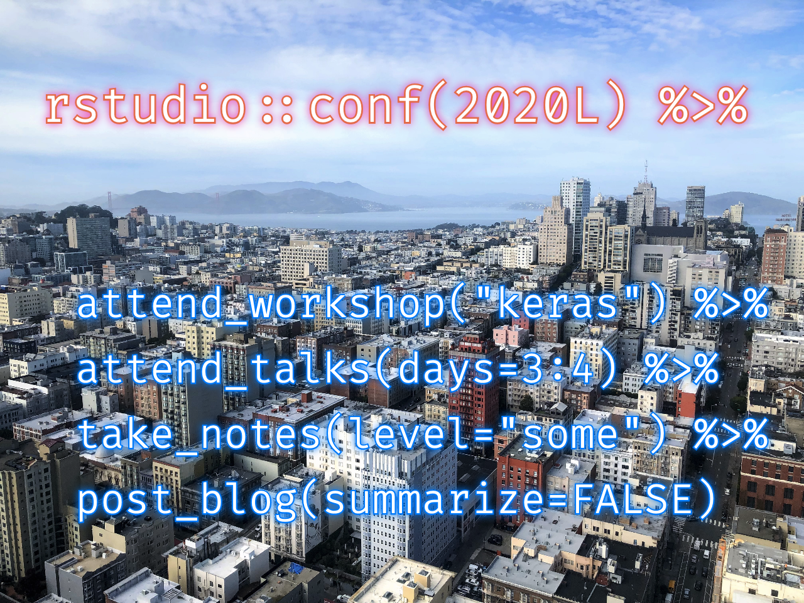

I had the good fortune to attend the RStudio Conference in San Francisco last week. It was a great experience!
Unfortunately, after being away from my day job for a week, I have quite a bit of catching up to do and not enough time to blog about what I saw and learned at the conference. I did however try to take notes during all the talks I attended, so I’m posting them here with the hopes of eventually coming back and pulling out some summaries of the most interesting parts.
You can follow along with the code from all of the 2-day workshops at github.com/rstudio-conf-2020, and the presentation videos from the third and fourth days should eventually be posted at resources.rstudio.com/rstudio-conf-2020. In the meantime, Emil Hvitfeldt and friends have collected links to slides and other resources at github.com/EmilHvitfeldt/RStudioConf2020Slides.
pins package easily lets you take an R object, store it somewhere else, and retrieve it
pin()pin_get()
butcher package to pull out things from a model (i.e. make it smaller)loadtest package performs load testingusethis::use_github_actions()
use_github_actions_tidy()
open_dataset()
dplyr on the filesarrow working with reticulatedata.table really is or how it compares to arrowtfdatasets package loads and pre-processes tabular data
feature_spec() function lets you create a recipe of transformationspurrr-style map/lambda functionstfautograph package lets you write conditional loops (if/while/for)tfhub package lets you use pre-trained models from TFHubtfhub::step_pretrained_text_embedding() within a tidymodels workflow to get pretrained embeddings from a model in TensorFlow Hubkeras::adapt() function finds frequencies of words, apparently without requiring Python dependenciestfprobability package
layer_distribution_lambda()
autokeras package is an interface to AutoMLRBERT package is available, but not recommended for fine-tuningtfdatasets package is a data input pipelinelogger packagelog_*() functions like log_info() or log_trace()log_warnings() prints warnings when they happen, not at the end like the default R behaviorglue package for strings or formatter_sprintf()log_eval() logs the result of the expression to evaluatedbr package, an alternative to DBI that automatically logs the connection details, SQL query, rows returned, time elapsed, etc.data.frame with one row per patientfi_cohort_start("SkinCancer")
fi_add_demographics() pulls from the demographic table and adds it to the recipefi_add_mortality() pulls data from the death table and adds it to the recipe
fi_add_biomarker() query and summarize one-to-many tables
fi_calc_age() calculates the patient age at a date given a column name for their birthdate and the event datefi_cohort_include() filters the cohort and includes a human-readable description of the filteras_tsibble(index="year", key="country", regular=FALSE...facet_sample() gets three groups each per 12 facets by defaultfacet_strata() gets all groups spread over 12 facets
feasts package has many feat_ functions for extracting useful time series metrics/statisticsR --no-save --no-restore-data to not save the workspacerm(list=ls()) doesn’t reset a lot of the things!reprex package helps with the “reproducible” part, but humans have to apply the art of getting the “minimal” example
traceback()
rlang::last_trace() is a way to show nicer traceback messagesoptions(error=recover)
ls.str() to see all the objects in the environment at that pointbrowser()
browser() at the beginning of the problematic functiondebug(functionName) instead
undebug() when done so that the function won’t trigger debug mode the next timedebugonce() to only debug it once (like calling debug() and then undebug())n to get to the next lineQ to get out of the browsertestthat::test_check()params in the YAML header instead of hardcoded vars---- creates a collapsing element in the HTMLlintr package to check the syntax, the styler package to reformat the code, and the spelling package to catch spelling mistakesstarters package has project templatespkgdown package to create documentationrenv package is a better version of packrat
packrat was challenging to use, and it made it difficult to recover from bad situationsfind.package() to see where a package is being loaded fromrenv
renv::snapshot() to create a list of packages usedrenv
renv::init()
renv::snapshot() updates the lockfile (renv.lock)renv::restore()renv uses a global package cache
remotes first)highcharter package in Shinyrocqi (pronounced “rocky”)
azuremlsdk package
tidymodels package is a “meta package” that loads recipes, parsnip, tune, etc.
recipe(), step_*()recipes::step_ns() to fit a natural splineparsnip package
tune package to easily tune model hyperparameters
tune()
tune("Longitude deg_free"))tune_grid() to tune the parametersselect_best() to extract the best parameters, and finalize_recipe() / finalize_model() to plug in those parameterstidymodels and tunesbmR package to fit Stochastic Block Modelsigraph package is big with problematic dependencies, so he decided to use Rcpp to create this packageCIDATools packagewavesurfer R Shiny package can capture annotations for training dataSome of these packages I had heard about prior to rstudio::conf, others I had not. I’d like to investigate all of them, time permitting.
| Package | Description | GitHub |
|---|---|---|
| arrow | Cross-language development platform for in-memory data | apache/arrow |
| autokeras | R interface to AutoKeras for automated machine learning | r-tensorflow/autokeras |
| azuremlsdk | R interface to Python AzureML SDK to manage cloud resouces, train models, and deploy on ACI/AKS | azure/azureml-sdk-for-r |
| brolgar | BRowse Over Longitudinal Data Graphically and Analytically in R | njtierney/brolgar |
| butcher | Reduce the size of model objects saved to disk | tidymodels/butcher |
| CIDATools | R project templates to setup folder structures, readme, and git according to CIDA workflow | ledbettc/CIDATools |
| dbr | Convenient database connections and queries from R on top of DBI | daroczig/dbr |
| feasts | Feature Extraction And Statistics for Time Series | tidyverts/feasts |
| glue | Glue strings to data in R; small, fast, dependency-free interpreted string literals | tidyverse/glue |
| highcharter | R wrapper for highcharts based on htmlwidgets | jbkunst/highcharter |
| lintr | Static code analysis for R | jimhester/lintr |
| loadtest | Automates performance testing of ML models and summarizes the results in a dashboard | tmobile/loadtest |
| logger | A lightweight, modern and flexible, log4j and futile.logger inspired logging utility | daroczig/logger |
| parsnip | A tidy unified interface to models | tidymodels/parsnip |
| pins | Pin, discover and share resources | rstudio/pins |
| pkgdown | Generate static html documentation for an R package | r-lib/pkgdown |
| RBERT | R implementation of the Python package BERT developed at Google for Natural Language Processing | jonathanbratt/RBERT |
| recipes | Preprocessing engine to generate design matrices | tidymodels/recipes |
| renv | Project environments for R | rstudio/renv |
| reprex | Render bits of R code for sharing, e.g., on GitHub or StackOverflow | tidyverse/reprex |
| sbmR | Implementation of the bipartite stochastic block model (biSBM) using rcpp | tbilab/sbmR |
| spelling | Tools for spell checking in R | ropensci/spelling |
| starters | Initialize projects for various R activities | lockedata/starters |
| styler | Non-invasive pretty printing of R code | r-lib/styler |
| tfautograph | Translates R control flow expressions (if, while, for, etc.) into TensorFlow graphs |
t-kalinowski/tfautograph |
| tfdatasets | R interface to the TensorFlow Dataset API to read, transform, and batch input data at scale | rstudio/tfdatasets |
| tfhub | R interface to TensorFlow Hub, a library for reusable machine learning modules | rstudio/tfhub |
| tfprobability | lR interface to TensorFlow Probability, a library for statistical computation and probabilistic modeling | rstudio/tfprobability |
| tidymodels | Easily install and load the Tidymodels packages | tidymodels/tidymodels |
| tune | Tools for tidy parameter tuning | tidymodels/tune |